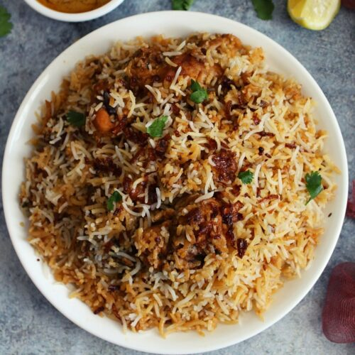

Hyderabad Dum Biryani

Description
Hyderabadi Chicken Dum Biryani is an authentic Hyderabadi special rice
dish which is a popular Dum Biryani recipe of Chicken from Hyderabad.
Served with kheera raita or cucumber raita or pyaz ka raita or onion raita
and Hyderabad is famous for Biryani all across India.
Ingredients
- 10 black peppercorns
- 6 whole cloves
- 5 cardamom pods
- 2 cinnamon sticks
- 2 whole star anise pods
- ½ teaspoon kala jeera (black cumin seeds)
- 1 bunch fresh cilantro leaves
- 1 bunch fresh mint leaves
- 1 cup plain yogurt
- 2 teaspoons lemon juice
- 2 teaspoons chile powder
- 1 teaspoon biryani masala powder (such as Dunya®)
- ¼ teaspoon ground turmeric
- 1 pound chicken thighs
Steps of creation
- 3½ cups water
- 2⅓ cups basmati rice
- 4 bay leaves, divided
- ½ cup warm milk
- 1 pinch saffron threads
- ¼ cup ghee (clarified butter), divided
- 2 onions, thinly sliced
- 2 green chile peppers, chopped
Return to Home